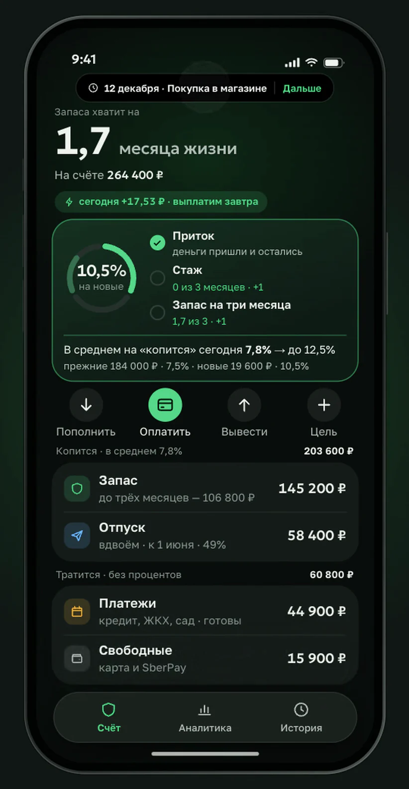

Запись кликабельного прототипа, 48 секунд. Клиент проживает месяц по событиям.
Каждое событие меняет счёт на глазах.

1
Конверт «Отпуск» появляется на счёте.
2
Первая раскладка с подтверждением. Надбавка за приток: 10,5%.
3
SberPay из свободных, накопления целы.
4
Четыре варианта без предвыбора. Анна доплачивает с карты.
5
Платежи уходят сами, 1/12 прежних денег переходит на сетку.
Запись кликабельного прототипа версии 2, идёт по кругу. Открыть кликабельный прототип